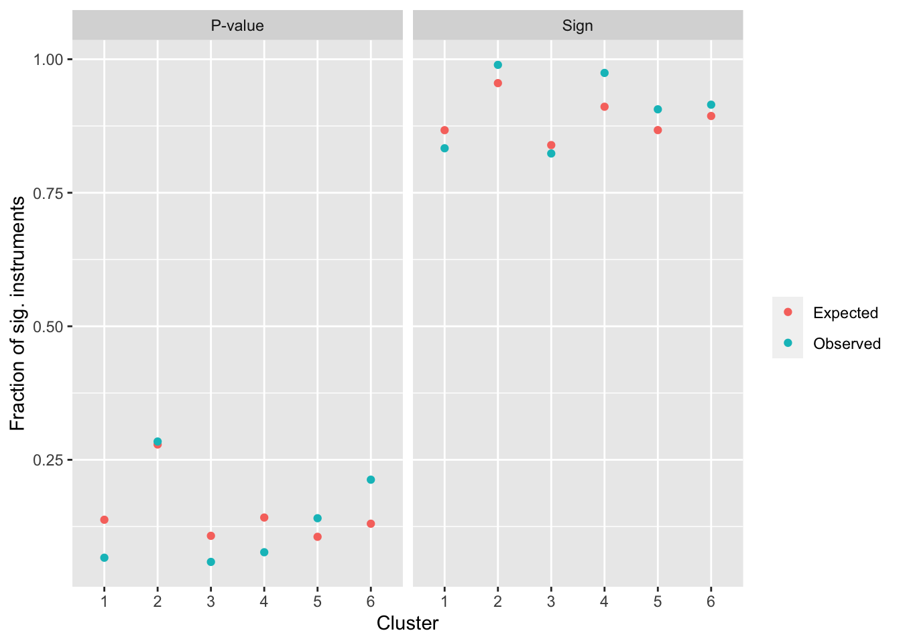

Liza’s analysis of BMI instruments clusters them by PheWAS and finds that cluster 4 relates to SES, and drives BMI-EDU biased effect. Are the instruments in cluster 4 solely due to dynastic confounding? If so they should fail to replicate in the sibling analysis.
Instruments
library(ieugwasr)
API: public: http://gwas-api.mrcieu.ac.uk/
library(dplyr)
Attaching package: 'dplyr'
The following objects are masked from 'package:stats':
filter, lag
The following objects are masked from 'package:base':
intersect, setdiff, setequal, union
`summarise()` has grouped output by 'id'. You can override using the `.groups`
argument.
Expected vs observed replication rates
o <-lapply(1:length(bmi_inst), function(i){ x <- bmi_inst[[i]] dat <-inner_join(subset(popest, rsid %in% x),subset(wfest, rsid %in% x),by="rsid" )exp_rep(dat$beta.x, dat$beta.y, dat$se.x, dat$se.y, 1e-3)[[1]] %>%mutate(cluster=i)})o %>%bind_rows() %>%ggplot(aes(x=as.factor(cluster), y=value/nsnp)) +geom_point(aes(colour=datum)) +facet_grid(. ~ metric) +labs(x="Cluster", y="Fraction of sig. instruments", colour="")

Summary
All clusters appear to replicate as expected in the within-family GWAS, which is consistent with there being almost no shrinkage of the effect sizes.
Childhood vs adulthood relationship to SES
library(TwoSampleMR)
TwoSampleMR version 0.5.6
[>] New: Option to use non-European LD reference panels for clumping etc
[>] Some studies temporarily quarantined to verify effect allele
[>] See news(package='TwoSampleMR') and https://gwas.mrcieu.ac.uk for further details
Attaching package: 'TwoSampleMR'
The following object is masked from 'package:ieugwasr':
ld_matrix
Harmonising Townsend deprivation index at recruitment || id:ukb-b-10011 (ukb-b-10011) and Childhood body mass index || id:ebi-a-GCST90002409 (ebi-a-GCST90002409)